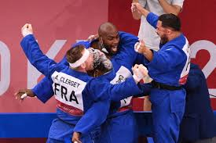

Paris 2024

Teddy Riner vise une nouvelle médaille d’or aux Jeux Olympiques de Paris 2024.
Champion du monde
Il remporte son 11e titre mondial, un record historique dans le judo.
Engagements
Teddy s’investit pour la jeunesse et la promotion du sport en France.